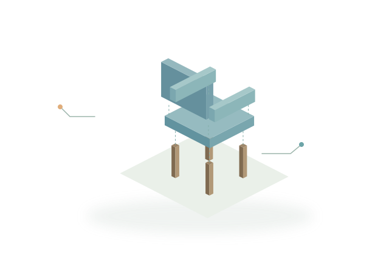
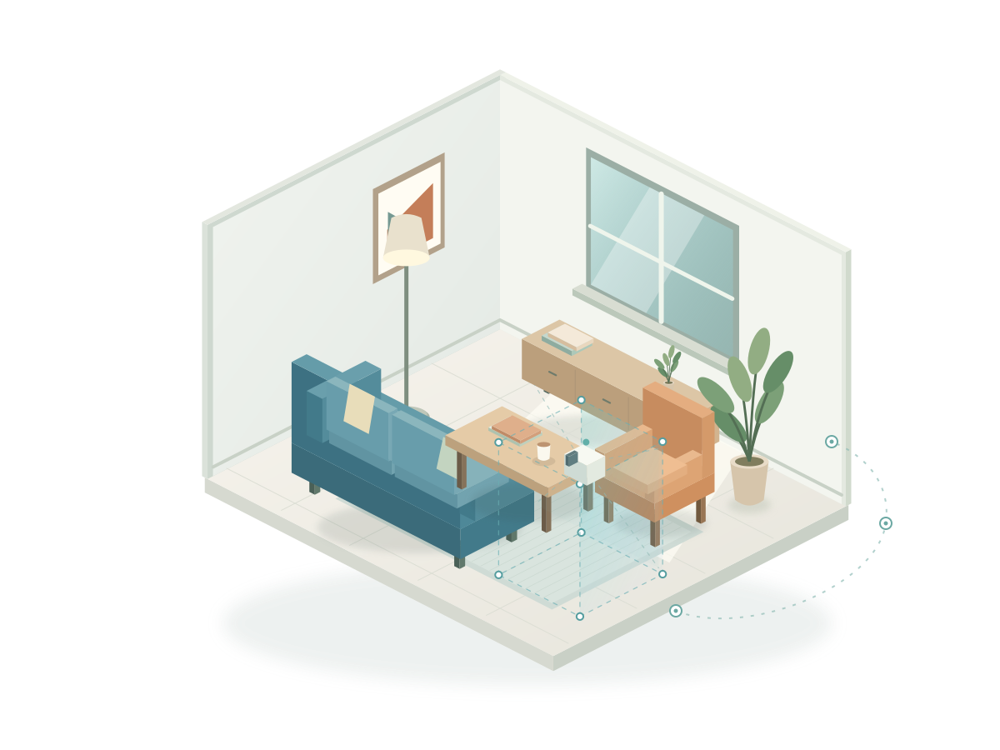
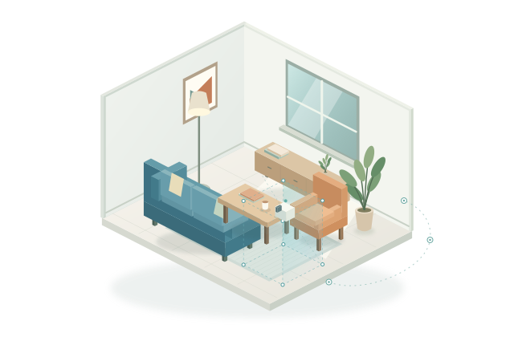
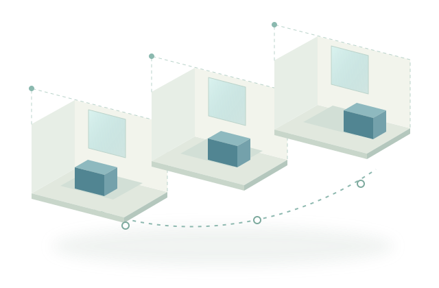

Visual assets
Geometry, appearance, parts, and materials for object-level creation.
FROM CONTENT GENERATION TO INTERACTION
Assets. Scenes. Dynamic worlds.
The foundations of generative XR.
Research collection updated · October 23, 2026

Generative models are changing how we create 3D objects, build spatial scenes, and imagine interactive worlds. Bringing these outputs into extended reality means connecting what a model generates to what a person can actually do.
A convincing image is only the starting point. Walking around a generated scene, editing an object's parts, keeping a change after a revisit, and responding to tracked input each require particular representations and system components.
The review catalogues 204 methods and systems and 37 resources. Four comparison axes organize the analysis, and source-linked profiles examine capability evidence for 31 selected methods and systems.
Four complementary content families span the route from a single asset to an interactive XR experience.

Geometry, appearance, parts, and materials for object-level creation.

Layouts, retained environments, and generated views for spatial exploration.

Time-varying 3D and action-conditioned observations.
Interfaces, delivery, and rendering that connect generation to interaction.
Explore the method families in the full catalogue. Select a method to find its paper and technical descriptors.
Loading the taxonomy…
Content categories tell us what is created. These four axes explain how it is constructed and what remains available during use.
Watch objects turn, move through generated scenes, and see XR interaction in action. Select a category and a demo to explore the original research.
Loading visual examples…
Videos stream from the authors' project websites. These are recorded demonstrations, not live model inference or experiments reproduced by this survey. Media sources & credits ↗
Search the complete collection of 204 methods and systems and 37 resources. Browse compact tables or open the detailed record for a method.
No matching papers. Try another term or reset the filters.
A critical narrative review with purposive selection and targeted retrieval through 23 October 2026. Counts describe this catalogue, not the prevalence of approaches across the field.
Resources serve different roles: providing training content, furnishing interactive environments, or evaluating a specified generation task.
Five proposed evaluation designs connect model-level evidence to the demands of immersive use. Each starts with an explicit operation and a measurable endpoint.
Research agenda: these are proposed matched evaluations, not new experimental results.
Which operation was demonstrated, by which component, and under which configuration? The supplement preserves the source locations behind the review's capability profiles.
Explore 31 selected profiles across eight capability dimensions, with all 248 cell explanations and configuration-specific evidence.
Explore the evidence ↗If this survey helps your research, please use the following bibliographic information.
@unpublished{huang2026visualgenerativexr,
title = {Visual Generative AI for Extended Reality: A Survey},
author = {Huang, Guoxi},
year = {2026},
note = {Manuscript, 23 October 2026}
}School of Computer Science and Digital Technologies
Aston University · Birmingham, United Kingdom
We thank the authors of the collected work for sharing their research. The website's visual organization is inspired by the WorldBench survey website.